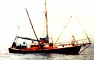

PHOTOS BY MARY ANN BLACK AND THE SAN JOSE MERCURY NEWS
A number of scenes from the day-to-day life of the sailboat, Choice ... a former pleasure craft that's become part of the northen California salmon fishing fleet and earns its keep!